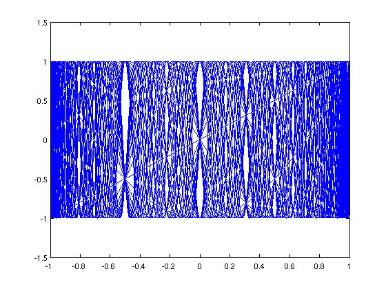
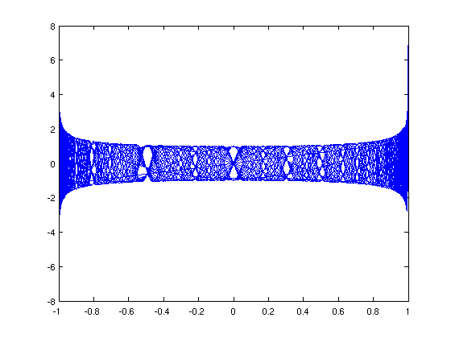

The white curves of Ortiz and Rivlin
Stefan Guettel, 2nd November 2011
(Chebfun example roots/WhiteCurves.m)
In their article ``Another Look at the Chebyshev Polynomials'' [1] from 1983, E. L. Ortiz and T. J. Rivlin considered the graph of 30 Chebyshev polynomials T_j(x), noticing the appearance of what they called "white curves":
plot(chebpoly(1:30),'b-') hold on
The white curves are regions in the graph with exceptionally many intersection points of Chebyshev polynomials. Ortiz and Rivlin show that if 0 < m <= n and T_m(x) = T_n(x) = y, then
(1 - T_{n-m}(x)) * (T_2(y) - T_{n-m}(x)) = 0.Hence the interior intersection points of Chebyshev polynomials must lie on the curve (x,y) satisfying T_2(y) = T_{n-m}(x). Smaller numbers of n-m correspond to smaller numbers of intersection points. Here are the intersection points obtained with n-m <= 4, obtained with Chebfun's rootfinding capability:
T_2 = chebpoly(2); for j = 1:4, % j = n-m T_j = chebpoly(j); for y = linspace(-1,1,200), x = roots(T_j - T_2(y)); plot(x,y,'r.'); end end

Ortiz and Rivlin also noted that the phenomenon of white curves persists for other orthogonal polynomials as well. For example, let's take the Legendre polynomials and plot them with some appropriate reweighting:
figure x = chebfun('x'); for j = 1:30, L = legpoly(j); q = (pi*j/2)^.5*(1-x.^2).^.25; plot(L.*q); hold on end
It is easy to compute the points (x,y) satisfying L_2(y) = L_j(x) just as before. They have no particular meaning in this case, but they appear as a nice pattern:
figure L_2 = legpoly(2); for j = 1:4, % j = n-m L_j = legpoly(j); for y = linspace(-1,1,200), x = roots(L_j - L_2(y)); if(~isempty(x)), plot(x,y,'r.'); hold on; end end end

References:
E. L. Ortiz and T. J. Rivlin, Another look at the Chebyshev polynomials, American Mathematical Monthly 90 (1983), 3-10.